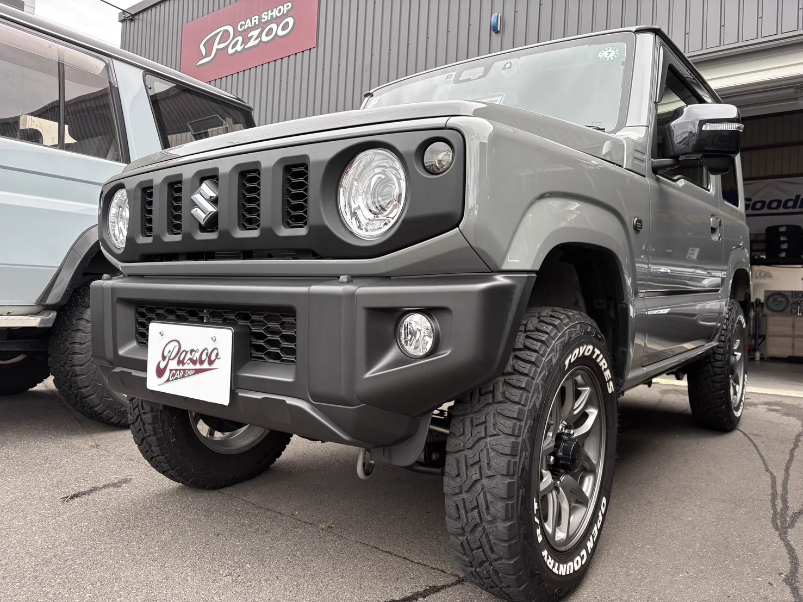
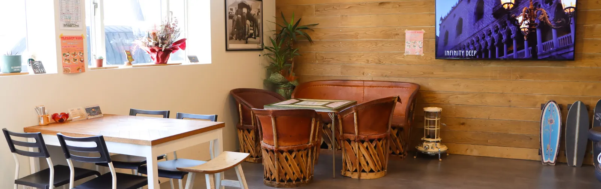

希望の車に巡り合えて、お店の方の対応もとても親切で良かったです。長く大切に乗っていきます。ありがとうございました。
01 — Order
お探しします
在庫にないお車も、全国のオークションとネットワークから探します。「こんなジムニーが欲しい」だけで大丈夫です。年式やグレードの違いからご説明します。




ジムニー買うなら、 Pazoo.
JIMNY &
CLASSIC 4WD
いまある車を見る店主のひとこと 素材待ち ここには店主様が話した言葉を、整えずにそのまま載せます。確認シートの⑨でお願いしている一言が届き次第、差し替えます。
— 店主
要確認 車種名・年式
In Stock
2026-09-02 時点の在庫です（店主様の許諾を得て掲載）。
写真は本番までに自社サーバーへ移します。最終更新から48時間を過ぎると、この欄は自動で表示を止めます。
What We Do
If You Had An Accident
Questions
常に何台か置いています。年式もグレードもいろいろですので、お使いになる場面をお聞かせいただければ、合う一台をご提案します。いま無ければお探しします。
お探しします。車種・年式・色・ご予算を伺い、全国のオークションとネットワークから探します。見つかり次第ご連絡します。
できます。JAAAの査定士が在籍していますので、その場で状態を確認してお見積りします。
ご利用いただけます。お支払い回数のご相談も承ります。取扱信販 要確認
ご用意しています。台数に限りがありますので、お早めにご相談ください。無料か 要確認
車両保険を使って修理すると、翌年から3等級下がるのが一般的です。修理代と保険料の増額を比べて、使わないほうが安く済む場合もあります。どちらが得か、当店で一緒に計算できます。
できます。どちらでお車を買われたか、どの保険会社かは問いません。
安全を確保して警察へご連絡ください。そのあとで当店にお電話いただければ、保険の手続きから修理まで順番にご案内します。
Get In Touch
Instagram連携 未設定 Behold の Feed ID を入れると、ここに最新の投稿が自動で並びます（手順＝Instagram連携_手順案内_LINE用.md）。
About Us
| 店名 | CAR SHOP Pazoo（カーショップ パズー） |
|---|---|
| 会社名 | 株式会社FIFTY'S |
| 所在地 | 〒962-0061 福島県須賀川市北山寺町318（国道4号沿い・須賀川IC5分） |
| 電話／FAX | 0248-76-2077／0248-94-5080 |
| 営業時間 | 10:00〜19:00／火曜定休 |
| 認証 | 東北運輸局長 認証工場 4-7761／古物商 251090001093 |
| 事業内容 | 中古車販売・買取／注文販売／車検・整備／板金塗装／コーティング／自動車保険代理店レンタカー 要確認 |
| スタッフ | 人数 要確認 |
Googleマップで開く ここへの経路を調べる Googleビジネスプロフィールのリンク 要確認